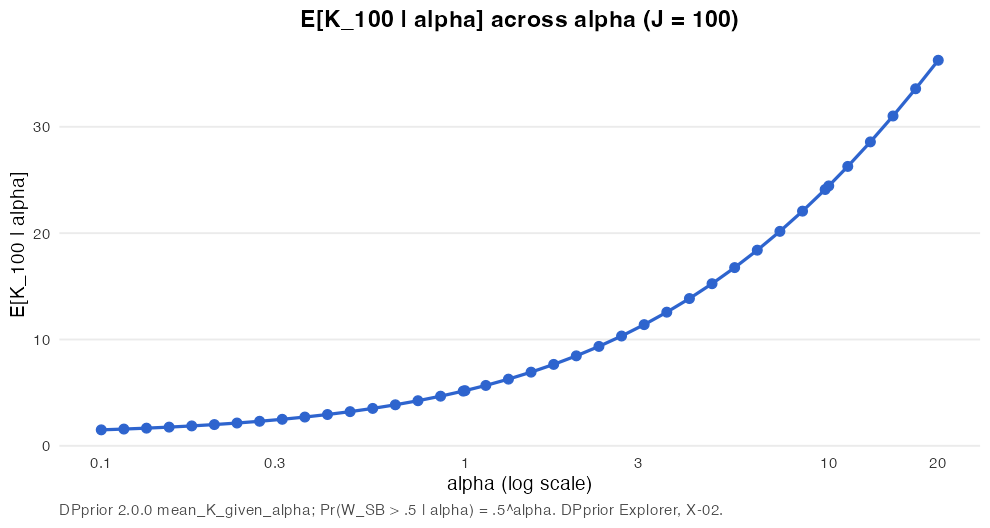

The alpha sweep in plotly and ggiraph
Catalog X-02 · a complementary-tool study
The widgets on this site are hand-written JavaScript on top of dp-core. This page draws the same kind of picture in R with htmlwidgets, to see what that route costs and when it is the better choice. The data are the conditional pmf of K_100 and the size-biased weight density f_SB(w | alpha) = alpha (1 − w)^(alpha − 1) for 40 values of alpha between 0.1 and 20, computed with DPprior 2.0.0; E[K_100 | alpha = 1] = 5.1874 agrees with the site’s golden value to every printed digit.
plotly: one frame per alpha
Press Play or drag the slider. As alpha grows, the pmf of K_100 moves to the right and the weight density moves toward 0: the count and the weight are two lenses on the same alpha (C-04 does this live, for any J).
ggiraph: hover for the numbers

The interactive ggiraph version adds a tooltip to each point with E[K_100 | alpha] and Pr(W_SB > .5 | alpha) = .5^alpha. It is built and measured by the same R script, but ggiraph’s JavaScript is licensed GPL-3 and this site’s code is MIT, so the site shows the chart as a picture.
What each route costs (measured)
| Route | What ships | Size | From file:// |
Interaction | Use it when |
|---|---|---|---|---|---|
| dp-core widget (this site) | one script bundle per widget + vendored D3 and Plot | bundles 10 KB to 635 KB (median 22 KB); D3 280 KB + Plot 209 KB, shared | yes | anything, computed live in the browser | the viewer should steer the model |
plotly, shared lib/ (this page) |
page with all 40 frames (564 KB) + lib/ (4.4 MB, of which plotly.js 3.5 MB) |
4.9 MB | yes (plain scripts) | frames, zoom, hover | a quick animated look at precomputed frames |
| plotly, self-contained | one HTML file | 4.35 MB | yes | same | sending one file |
| ggiraph, self-contained (not shipped here: GPL-3) | one HTML file with an SVG | 0.30 MB (with fonts left out) | yes | hover, select | a ggplot2 figure with tooltips, where GPL-3 is acceptable |
| htmlwidgets inside a Quarto page (knitr) | the same widgets, rendered into the page | as above | yes | same | a document that runs R anyway; not used here, so the site render needs no R |
Three lessons from building it. ggiraph’s default font set embeds the Liberation fonts (3 × 6.2 MB = 18.6 MB) and a system font set would copy system font files, so the widget is saved without font files and the browser uses its own sans-serif. Licences travel with the libraries: ggiraph’s JavaScript is GPL-3 and htmltools’ fill.css is GPL (>= 2), so neither is published here (the plotly page lays out without fill.css). And plotly’s subplot with animation frames warns that “scatter objects don’t have frameOrder”; the warning is harmless and the frames play. In a reveal.js deck both widgets go in as an iframe, like the deck’s local iframe slide.
How it is made (R, not run on this site)
# r-export/08_plotly_frames.R (excerpt)
ALPHA <- sort(unique(c(exp(seq(log(0.1), log(20), length.out = 38)), 1, 10))) # 40 frames
pmf <- do.call(rbind, lapply(ALPHA, function(a)
data.frame(alpha = a, k = 1:60, p = pmf_K_given_alpha(100, a, logS)[-1][1:60])))
bars <- plot_ly(pmf, x = ~k, y = ~p, frame = ~signif(alpha, 3), type = "bar")
line <- plot_ly(fsb, x = ~w, y = ~f, frame = ~signif(alpha, 3), type = "scatter", mode = "lines")
subplot(bars, line, widths = c(0.6, 0.4)) |>
animation_opts(frame = 500, transition = 250, redraw = FALSE)
girafe(ggobj = gg, font_set = gdtools::font_set(sans = "Helvetica")) # measured, not shipped (GPL-3)
htmlwidgets::saveWidget(w, "plotly-alpha-sweep.html", selfcontained = FALSE, libdir = "lib")The data behind both widgets are in data/precomputed/alpha_sweep_J100.json.